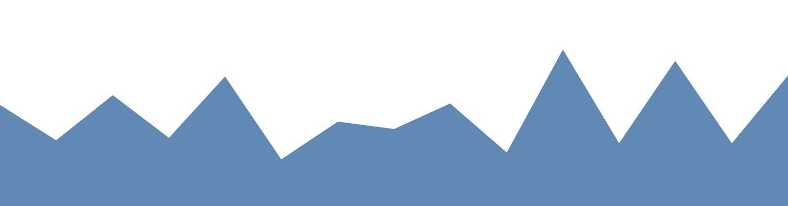
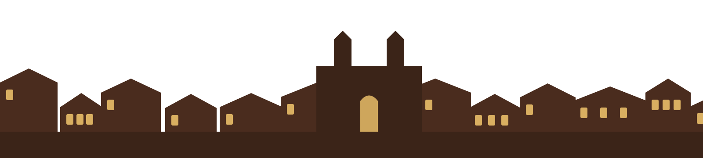
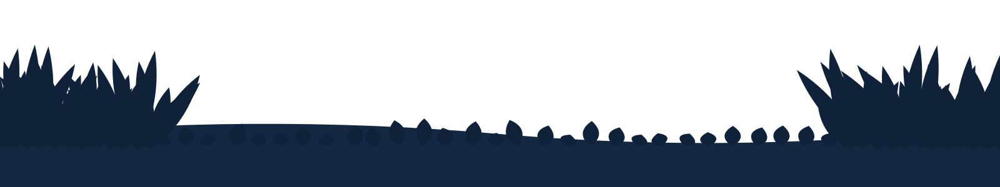

Vagas com prioridade
50% das vagas de cada módulo são destinadas a moradores de Pirenópolis e 20% a pessoas de regiões periféricas, povos e comunidades tradicionais ou beneficiárias de programas de assistência social.

Tessituras do Brincar Inscreva-se
Formação brincante de ritmos e danças das culturas populares
dos quintais às ruas


A formação
O Tessituras do Brincar é uma formação imersiva e gratuita em ritmos e danças das culturas populares brasileiras, realizada pela Guaimbê – Espaço e Movimento Criativo no Ponto de Cultura Quintal da Aldeia, em Pirenópolis.
A metodologia é a Pedagogia do Quintal: aprender fazendo junto, no corpo, na roda e na troca entre gerações. Mestras e mestres de Goiás, do Rio de Janeiro e do Maranhão conduzem seis encontros, de novembro de 2026 a junho de 2027.
Os módulos são independentes: você pode fazer um, alguns ou todos.
50% das vagas de cada módulo são destinadas a moradores de Pirenópolis e 20% a pessoas de regiões periféricas, povos e comunidades tradicionais ou beneficiárias de programas de assistência social.
Espaço acessível, com rampas e banheiros adaptados. Intérprete de Libras, tecnologias assistivas e kits de autorregulação sob demanda, informados na inscrição.
O projeto oferece os instrumentos de cada ritmo. Tem lanche com café nos turnos. Crianças participam excepcionalmente, acompanhadas de adulto.
Os módulos
Cada módulo tem 15 horas, de sexta a domingo. Abra um módulo para ver os turnos, quem conduz e as fotos.
Docentes
Guardiãs e guardiões da cultura popular de Goiás, do Rio de Janeiro e do Maranhão.
Inscrições
Dúvidas
Nada. A formação é 100% gratuita e tem certificado para quem cumprir a frequência mínima.
Não. O curso é para pessoas com alguma atuação no campo das culturas populares, mas não exige técnica prévia, e o projeto oferece os instrumentos.
Pode. Os módulos são independentes e você escolhe quais quer fazer no formulário.
Excepcionalmente, sempre acompanhadas de um adulto.
Indique no formulário de inscrição. Intérprete de Libras, tecnologias assistivas e kits de autorregulação são providenciados conforme a demanda.